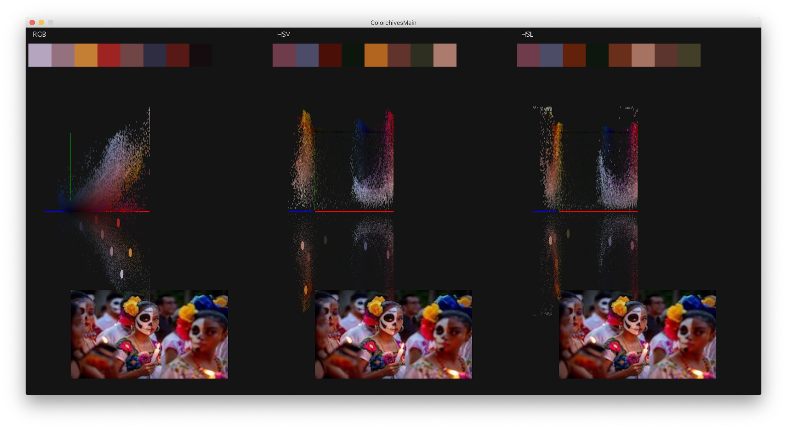

Color quantization is a long studied issue in computer graphics. The idea of color quantization is utilizing decompression to represent an image in less pixels than its original format. Color quantization is also utilized to generate color palettes from images.
The goal of Colorchives is to develop a prototyping tool for designers to generate color palettes, specifically towards event based photos for archival purposes. The tool will allow users to upload images and generate a variety of palettes given different parameters and color spaces. This makes for a more intuitive artistic representation of various images that current color quantization algorithms are not optimized for.
This is work from my graduate schooling, see the Media Lab page for more information. Part of this was also used in my thesis work near the end of my MS degree.
